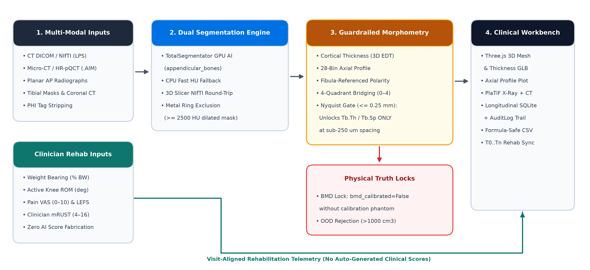
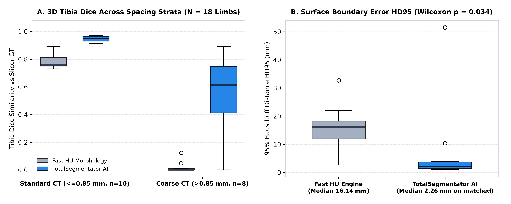
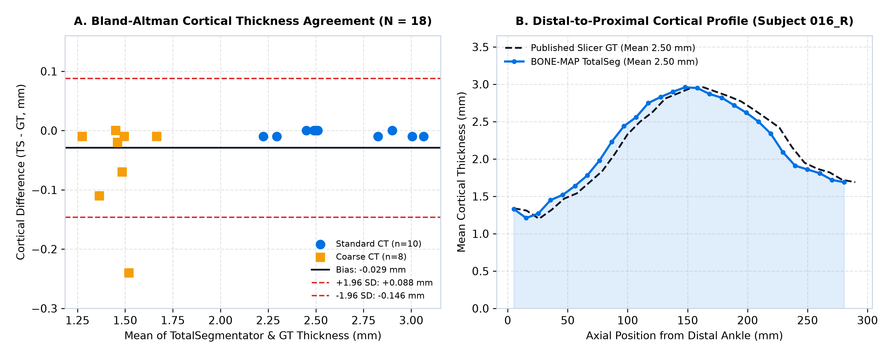
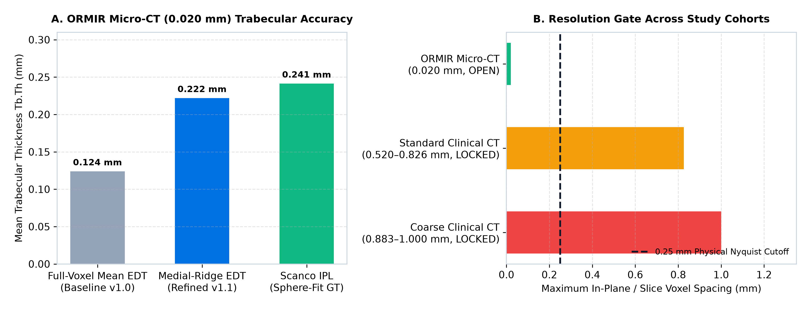
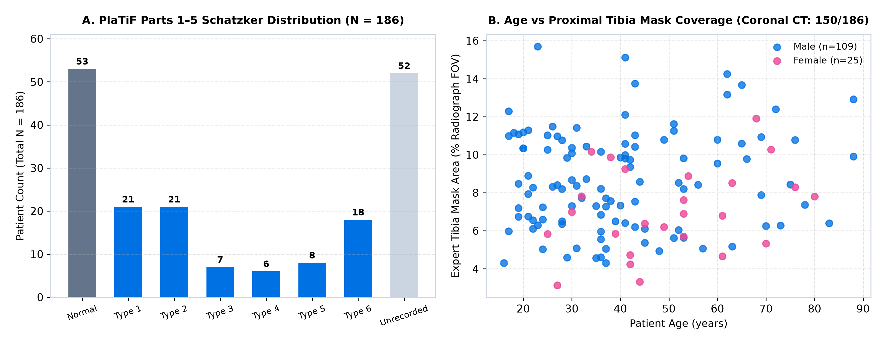

Purpose: Rehabilitation following tibial fractures requires aligning 3D structural bone assessments with progressive weight-bearing milestones. However, automated bone-analysis tools frequently apply micro-CT trabecular algorithms to coarse clinical CT scans or report uncalibrated Hounsfield units (HU) as volumetric bone mineral density (BMD), creating physical reliability hazards. Methods: We developed BONE-MAP, an open-source, resolution-gated architecture integrating TotalSegmentator appendicular segmentation, a CPU HU fallback, 3D Slicer label-map round-trip, fibula-referenced four-quadrant cortical bridging, and physiotherapy tracking (%BW, active ROM, VAS, LEFS, clinician mRUST). Hard guardrails lock trabecular metrics above 0.25 mm spacing and uncalibrated BMD. Validation spanned 18 clinical lower-limb CTs with 3D Slicer ground truth, 0.020 mm micro-CT, and 186 tibial plateau fracture cases. Results: Across all 18 CT limbs, TotalSegmentator outperformed the CPU fallback in Tibia Dice (median 0.9157 vs 0.7344, Wilcoxon p = 3.82 × 10−5) and HD95 (median 3.73 vs 16.14 mm, p = 0.034), reaching 0.9465 ± 0.0211 Dice and 0.63 ± 0.15 mm ASSD on ≤0.85 mm scans. Bland–Altman cortical thickness bias was −0.029 ± 0.060 mm. Medial-ridge trabecular refinement cut 0.020 mm micro-CT error from 0.1174 mm to 0.0194 mm (0.222 vs 0.2414 mm reference). Conclusion: BONE-MAP provides a reproducible, physically honest software baseline uniting multi-modal tibial morphometry with rehabilitation telemetry while preventing sub-resolution or uncalibrated metric fabrication.
Long-bone fractures of the tibia—spanning high-energy diaphyseal trauma and intra-articular tibial plateau fractures—undergo prolonged secondary healing in which mechanical loading directly stimulates bone remodeling. In routine clinical workflows, structural imaging assessment and functional physiotherapy rehabilitation remain disconnected. Orthopedic and radiologic evaluations rely on qualitative CT slice inspection or ordinal radiographic scales such as the Radiographic Union Score for Tibial Fractures (RUST) and Modified RUST (mRUST) [2], [3], while physiotherapists must prescribe weight-bearing progression (% body weight), knee range of motion (ROM), pain visual analog scores (VAS), and Lower Extremity Functional Scale (LEFS) milestones [9] without spatially resolved cortical wall thickness or quadrant-bridging metrics.
Existing quantitative imaging pipelines present two major pitfalls when translated from laboratory micro-CT to routine clinical care. First, partial-volume effects (PVE) at clinical CT voxel spacings (0.5–1.0 mm) blur individual trabeculae (~0.05–0.15 mm) well beyond physical resolvability [5], causing naive micro-CT trabecular thickness (Tb.Th) and separation (Tb.Sp) algorithms to emit physically meaningless numbers. Even dedicated high-resolution peripheral quantitative CT (HR-pQCT, 61–82 μm) requires explicit resolution protocols to mitigate boundary-averaging bias [4], [5]. Second, converting single-energy Hounsfield units (HU) into volumetric bone mineral density (mg/cm³) without an in-scan calibration phantom violates quantitative CT densitometry standards [6].
To address both the interdisciplinary structural–rehabilitation gap and these physical reliability hazards, we designed and validated BONE-MAP (code and datasets anonymized during review): an open-source, local-first imaging informatics architecture uniting deep-learning appendicular CT segmentation [1], multi-modal tibial plateau review, longitudinal physiotherapy tracking, and strict physical guardrails.
BONE-MAP employs a decoupled Python 3.12 backend (FastAPI, SQLAlchemy, SQLite, SimpleITK [8], SciPy, scikit-image) and TypeScript/React frontend (Next.js 16, Three.js WebGL), as illustrated in Figure 1. Incoming DICOM series or NIfTI volumes undergo protected health information (PHI) tag stripping and canonical Left–Posterior–Superior (LPS) reorientation. Each patient record links serial encounters (timepoints T0..Tn) storing both structural imaging runs and clinician-entered functional outcomes (%BW tolerance, active knee flexion/extension ROM, Pain VAS 0–10, LEFS 0–80, and 4-cortex clinician mRUST 4–16). Every mutation writes to an immutable audit log, and longitudinal CSV exports escape spreadsheet formula prefixes (=, +, -, @).

Three interchangeable segmentation paths are supported: (1) GPU-accelerated TotalSegmentator (appendicular_bones task) isolating discrete tibia and fibula labels [1]; (2) a zero-dependency CPU morphology fallback (auto_lower_limb); and (3) bidirectional 3D Slicer NIfTI label-map exchange [7]. Hardware voxels (≥2500 HU) trigger a dilated metal-exclusion mask to suppress metallic streak bias prior to attenuation summarization.
For cortical wall thickness, an anisotropic 3D Euclidean Distance Transform (EDT) is evaluated across the cortical shell (≥750 HU inside the tibial mask). To avoid boundary-voxel underestimation, interior medial-ridge core voxels satisfying edt ≥ 0.45 × local_ridge within a 3×3×3 neighborhood (scaled by 2.0) are aggregated into whole-bone mean, median, 5th-percentile, and 90th-percentile thickness alongside a 28-bin distal-to-proximal axial profile. Fragment alignment (coronal/sagittal angulation) uses Singular Value Decomposition (SVD) principal axes, and four-quadrant cortical continuity (Anterior, Posterior, Medial, Lateral) references the co-registered fibular centroid vector to preserve anatomical laterality across left and right limbs.
max(dx, dy, dz) ≤ 0.25 mm; coarser clinical CT scans lock trabecular status to unavailable_clinical_ct_resolution. For sub-0.25 mm specimens, we refined our initial full-voxel EDT mean (v1.0) to medial-ridge core sampling (edt ≥ 0.90 × local_ridge, v1.1) to approximate Hildebrand–Rüegsegger maximal-inscribed-sphere local thickness [4] without quadratic dilation runtime.bmd_calibrated stays False and HU statistics remain strictly uncalibrated.
All validation scripts were automated across four public open-access Zenodo collections totaling N = 205 anatomical/patient evaluations:
VSDFullBody, N = 18 limbs across 9 subjects [10]): Matched Shanks-Feet CT NRRD volumes and expert 3D Slicer segmentations (subjects 002, 006, 010, 014, 015, 016, 017, 019, 023; phantom scans excluded). Slicer masks were resampled via nearest-neighbor onto canonical LPS CT grids and slice-filled to match whole-bone solid tibia ground truth. We computed Tibia/Fibula Dice, 95% Hausdorff Distance (HD95), Average Symmetric Surface Distance (ASSD), and Bland–Altman cortical thickness agreement, stratified by in-plane spacing (≤0.85 mm vs >0.85 mm) with paired Wilcoxon signed-rank tests.ORMIR CHAR_NOCMP_020.AIM [12]): Scanco AIM v020 specimen (64 × 156 × 296 voxels, VAX F-float decoded isotropic 0.020 mm spacing, 59.0% solid fraction) containing embedded Scanco IPL D3P_Dt_Obj sphere-fit reference thickness (0.2414 ± 0.0533 mm).PlaTiF Parts 1–5, N = 186 patients [11]): Full public clinical cohort with AP radiographs, expert proximal-tibia masks, optional paired 2D coronal CT slices, and Schatzker I–VI classifications.PENGWIN26 [13]): Clinical pelvic trauma CT (1257 cm³) verifying non-tibial anatomical rejection.
Table 1 and Figure 2 summarize segmentation accuracy across all 18 evaluated lower limbs. Pooled across the entire cohort, TotalSegmentator significantly outperformed the CPU HU fallback in both Tibia Dice (median 0.9157 [IQR 0.6489–0.9482] vs 0.7344 [0.0000–0.7584], Wilcoxon p = 3.82 × 10−5) and HD95 boundary error (median 3.73 mm vs 16.14 mm, p = 0.034). Across standard-resolution scans (≤0.85 mm in-plane spacing, n = 10 limbs, 0.520–0.826 mm), TotalSegmentator achieved 0.9465 ± 0.0211 Tibia Dice, 0.8853 ± 0.0361 Fibula Dice, 2.05 ± 1.09 mm HD95, and sub-voxel ASSD of 0.63 ± 0.15 mm. Conversely, on coarse (>0.85 mm, n = 8) osteopenic scans with thinner cortices (1.28–1.67 mm), single-threshold CPU HU collapsed on 6/8 limbs (0.0000 Dice) due to partial-volume attenuation loss below 750 HU, whereas TotalSegmentator preserved structural localization (median 0.6133 Dice, 9.66 mm HD95), with two severe localization outliers (006_R: 0.0005 Dice; 014_R: 0.1346 Dice).
| Cohort Stratum & Method | Limbs (n) | Tibia Dice Mean ± SD | Tibia Dice Median [IQR] | Fibula Dice Mean | HD95 (mm) Median [IQR] | ASSD (mm) Mean / Median | Runtime (s) Mean |
|---|---|---|---|---|---|---|---|
| Pooled TotalSegmentator AI | 18 | 0.7630 ± 0.2917 | 0.9157 [0.649–0.948] | 0.6973 | 3.73 [1.56–8.61] | 3.09 / 0.81 | 36.26 |
| Pooled Fast HU Fallback | 18 | 0.4461 ± 0.3941 | 0.7344 [0.000–0.758] | — | 16.14 [11.93–18.23] | — | 2.32 |
| Standard (≤0.85 mm) TotalSeg | 10 | 0.9465 ± 0.0211 | 0.9480 [0.931–0.965] | 0.8853 | 1.59 [1.30–2.88] | 0.63 / 0.61 | 39.93 |
| Standard (≤0.85 mm) Fast HU | 10 | 0.7858 ± 0.0583 | 0.7574 [0.750–0.814] | — | 14.81 [11.40–17.12] | — | 4.08 |
| Coarse (>0.85 mm) TotalSeg | 8 | 0.5338 ± 0.3129 | 0.6133 [0.412–0.749] | 0.4622 | 9.66 [7.29–13.57] | 6.17 / 2.46 | 31.66 |
| Coarse (>0.85 mm) Fast HU | 8 | 0.0215 ± 0.0444 | 0.0000 [0.000–0.014] | — | 24.98 | — | 0.12 |

Despite coarse-scan boundary degradation, cortical thickness extraction demonstrated sub-0.1 mm agreement across all 18 limbs (Table 2, Figure 3). Pooled Bland–Altman bias (TotalSegmentator minus Slicer GT) was −0.0289 ± 0.0598 mm (95% Limits of Agreement: −0.1461 to +0.0883 mm). On standard-spacing CTs (n = 10), absolute mean error dropped to 0.0050 mm (bias −0.0050 ± 0.0053 mm, LOA −0.0153 to +0.0053 mm), matching distal-to-proximal anatomical gradients on 28-bin axial profiles (1.21 mm distal epiphysis to 2.96 mm mid-diaphysis).
| Cohort Stratum | Limbs (n) | Mean Bias ± SD (mm) | Mean Absolute Error (mm) | 95% Limits of Agreement (mm) |
|---|---|---|---|---|
| Pooled Cohort | 18 | −0.0289 ± 0.0598 | 0.0289 | [−0.1461, +0.0883] |
| Standard Spacing (≤0.85 mm) | 10 | −0.0050 ± 0.0053 | 0.0050 | [−0.0153, +0.0053] |
| Coarse Spacing (>0.85 mm) | 8 | −0.0587 ± 0.0825 | 0.0587 | [−0.2205, +0.1030] |

Every clinical CT volume in the 18-limb benchmark (0.520–0.977 mm in-plane spacing) exceeded the 0.25 mm Nyquist cutoff and locked trabecular outputs (unavailable_clinical_ct_resolution). On the 0.020 mm ORMIR CHAR_NOCMP_020 specimen (Table 3, Figure 4), the gate automatically unlocked (measured_high_resolution). Replacing raw full-voxel EDT averaging (0.124 mm, absolute error 0.1174 mm) with 0.90-ridge medial projection yielded Tb.Th = 0.222 mm and Tb.Sp = 0.351 mm—reducing error against Scanco IPL sphere-fit reference (0.2414 ± 0.0533 mm) by 83.5% to 0.0194 mm (<1 voxel).
| Specimen / Cohort | Max Voxel Spacing (mm) | Gate State | Computed Metric | Reference / Error |
|---|---|---|---|---|
ORMIR CHAR_NOCMP_020 (Baseline v1.0 EDT) |
0.020 | OPEN | Tb.Th = 0.124 mm | IPL Ref: 0.2414 mm (Err: 0.1174 mm) |
ORMIR CHAR_NOCMP_020 (Refined v1.1 Ridge) |
0.020 | OPEN | Tb.Th = 0.222 mm; Tb.Sp = 0.351 mm | IPL Ref: 0.2414 mm (Err: 0.0194 mm) |
| Clinical CT Cohort (18 limbs) | 0.600–0.977 | LOCKED | Tb.Th / Tb.Sp = None; Cortical MAE = 0.029 mm | >0.25 mm cutoff (2.4–3.9×) |

Evaluating all five archives of PlaTiF (N = 186 patients, Table 4, Figure 5) confirmed scalable multi-modal ingestion: 150/186 (80.6%) patients carried paired 2D coronal CT slices alongside AP radiographs and expert tibia masks, and 144/186 (77.4%) included multi-view radiographs. Among patients with recorded demographics (n = 134), mean age was 41.9 ± 17.7 years (range 16–88; 109 male, 25 female; 70 right, 62 left, 2 bilateral), spanning 53 normal controls and 81 classified tibial plateau fractures (Schatzker Types I: 21, II: 21, III: 7, IV: 6, V: 8, VI: 18; 52 unrecorded). Expert tibia masks covered 8.52 ± 2.71% of radiograph area. Automated unit tests (5/5 passing) verified security contracts, CSV escaping, fibula-referenced polarity, resolution gating, and longitudinal deltas alongside a verified Next.js 16 production build.
| Cohort Characteristic | Measured Value across Parts 1–5 | Operational Note |
|---|---|---|
| Total Patients / Demographics | N = 186 (Recorded n = 134: 109 M, 25 F; 41.9 ± 17.7 yrs) | 52 records unlabelled in upstream metadata |
| Schatzker & Control Breakdown | Normal: 53; Fractured: 81 (I:21, II:21, III:7, IV:6, V:8, VI:18) | Laterality: 70 R, 62 L, 2 bilateral, 52 unrecorded |
| Imaging Modalities | AP X-Ray + Mask: 186/186 (100%); Coronal CT: 150/186 (80.6%) | Multi-view radiographs: 144/186 (77.4%) |
| Expert Tibia Mask Area | 8.52 ± 2.71% of radiograph FOV | Paired with structured clinician mRUST (4–16) UI |

Our stratified 18-limb benchmark demonstrates why open clinical bone-informatics platforms require both modern deep segmentation and explicit failure-mode transparency. On routine ≤0.85 mm lower-limb CTs, TotalSegmentator [1] achieved sub-voxel surface agreement (0.63 mm ASSD, 0.9465 Dice) and near-exact cortical thickness estimation (0.005 mm MAE). More importantly, testing coarser (>0.85 mm) osteopenic scans exposed the fragility of fixed-HU thresholding: partial-volume dilution lowered peak cortical attenuation below 750 HU and collapsed CPU segmentation on 6/8 limbs, while deep segmentation still maintained 0.0587 mm mean cortical accuracy except for two localization failures (006_R, 014_R). Inspecting such failures reinforces why bidirectional 3D Slicer mask round-trip editing [7] must remain integrated into clinical research workflows.
Similarly, calibrating the high-resolution trabecular path against Scanco IPL's maximal-inscribed-sphere standard [4] reduced measurement bias from 0.1174 mm to 0.0194 mm (<1 voxel at 20 μm) while keeping clinical CT scans cleanly guarded against partial-volume fabrication [5].
Limitations: First, the public Zenodo cohorts evaluated here provide cross-sectional anatomy and admission fracture images (zero paired longitudinal follow-up CT and physiotherapy trajectories), restricting current validation to quantitative accuracy and system workflow rather than prognostic outcome prediction. Second, uncalibrated clinical HU requires phantom standardization [6] before reporting volumetric BMD. Third, prospective institutional ethics protocols and multi-reader orthopedic/physiotherapy validation remain necessary prior to clinical deployment.
BONE-MAP integrates 3D tibial cortical morphometry, multi-modal tibial plateau fracture review, and structured physiotherapy outcome logging inside an auditable open-source architecture governed by physical resolution and calibration guardrails. Validated across 18 lower-limb CTs, 20 μm micro-CT, and 186 tibial plateau fracture records, the platform offers a physically honest technical foundation for future longitudinal fracture-rehabilitation research.